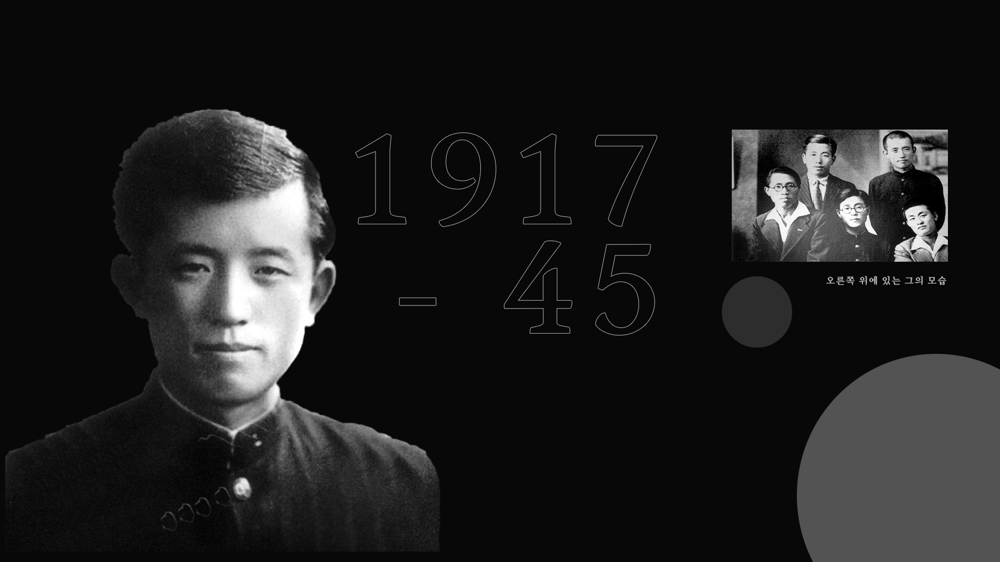

윤동주는 한국인이 가장 사랑하고, 동아시아인이 기억하고, 세계인이 공감하는 시를 남긴 시인이다.
혹독한 식민지 상황에서도 문학을 통해 시대와 삶의 방향성을 모색하던 청년 윤동주는 독립운동이
라는 죄목으로 수감되어 1945년 2월 16일 일본 후쿠오카 형무소에서 만 27세라는 젊은 나이로 생을
마감했지만, 가장 아름다운 시인이자 청년으로 우리 마음 속에 살아 숨 쉬고 있다. 그는 서시, 십자가,
별 헤는 밤 등의 시를 통해 맑고 순결한 영혼이 지상에 살아 있음을 보여주었다.
일본의 식민 통치가
강화되어 한글이 철저히 금지되었던 시기에도 윤동주는 “모든 죽어가는 것들을
사랑”하는 마음으로
굳건히 한글로 시를 썼다. 자기를 성찰하며 신념의 길을 걷고자 했던 윤동주의
시는 각 시대와 청년
들을 움직이는 동력이 되어 주었다. 윤동주와 그의 시는 우리 사회의 마음을 비추는 우물이자 거울이다.